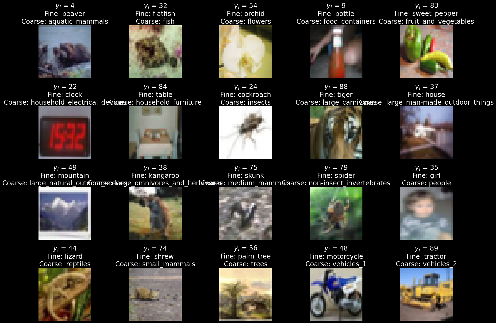
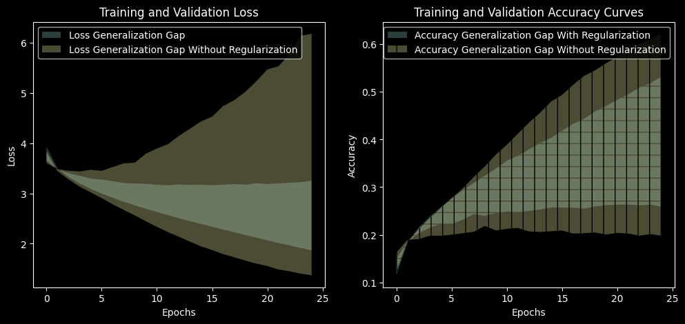

In this part of the project, you will focus on understanding and mitigating overfitting in deep learning models. Your goal is to demonstrate a significant improvement over a baseline and explain which methods contributed to it.
Apply each technique separately to a fresh model, keeping other settings fixed unless a change is required. Reuse the same training, validation, and test subsets throughout.
Use validation results to choose settings and stopping points. After those choices are finalized, evaluate the selected model on clean training and test images in evaluation mode.
For every technique, report:
Training loss, test loss, and loss gap = test loss − training loss.
Training accuracy, test accuracy, and accuracy gap = training accuracy − test accuracy.
Use ordinary cross-entropy on fine-class labels for evaluation, without label smoothing, regularization penalties, or auxiliary-task losses.
Compare both gaps with the baseline. Explain whether a smaller gap comes from improved test performance, reduced training performance, or both.
CIFAR-100 contains 60,000 color images, each 32 × 32 pixels, organized into 100 fine-grained classes and 20 broader categories.
import numpy as npfrom matplotlib import pyplot as plt# Split complete rows so images and both labels stay aligned.# Run this from the original ds, replacing your existing split code.split = ds["train"].train_test_split( test_size=10_000, seed=42, stratify_by_column="fine_label")train_ds = split["train"]valid_ds = split["test"]test_ds = ds["test"]fine_names = train_ds.features["fine_label"]coarse_names = train_ds.features["coarse_label"]# Retrieve labels without loading every image.y_train = np.array(train_ds["fine_label"])coarse_train = np.array(train_ds["coarse_label"])plt.style.use("dark_background")fig, axes = plt.subplots(4, 5, figsize=(20, 14))for label inrange(20): i = np.flatnonzero(coarse_train == label)[0] example = train_ds[int(i)] ax = axes.flat[label] ax.imshow(example["img"]) ax.set_title(f"$y_i$ = {example['fine_label']}\n"f"Fine: {fine_names.int2str(example['fine_label'])}\n"f"Coarse: {coarse_names.int2str(example['coarse_label'])}" ) ax.axis("off")plt.tight_layout()plt.show()print(f"Train: {len(train_ds)}, "f"Validation: {len(valid_ds)}, "f"Test: {len(test_ds)}")

Train: 40000, Validation: 10000, Test: 10000
0. Baseline
Build a sequential feed-forward neural network model and train it from random initialization using cross-entropy loss.
For the baseline:
Normalize the input images.
Use no data augmentation, dropout, label smoothing, injected noise, or weight decay.
Train for a fixed number of epochs.
Save training and validation loss and accuracy after every epoch.
Keep model size and training budget practical for repeated experiments.
Choose the optimizer, learning-rate schedule, batch size, and epoch budget before the main experiments. Keep them fixed unless a method requires a documented change.
Note that transforms.Compose combines image transformations into a sequence and applies them in the order listed whenever an image is loaded. In this notebook, it converts images into PyTorch tensors using ToTensor() and normalizes each color channel using Normalize(). For data augmentation, we add transformations such as random crops and horizontal flips before ToTensor(). These random transformations can produce a different version of an image each time it is loaded during training. For validation and testing, we use only conversion and normalization so that evaluation images are not randomly altered.
Report parameter count, training time, training accuracy, validation accuracy, and the generalization gap:
# Plot with regularization and compare with without regularizationfig, axs = plt.subplots(1, 2, figsize=(12, 5))axs[0].fill_between(range(len(train_with_reg_loss_history)), val_with_reg_loss_history, train_with_reg_loss_history, alpha=0.3, label='Loss Generalization Gap')axs[0].fill_between(range(len(train_loss_history)), val_loss_history, train_loss_history, alpha=0.3, label='Loss Generalization Gap Without Regularization')axs[0].legend()axs[0].set_xlabel('Epochs')axs[0].set_ylabel('Loss')axs[0].set_title('Training and Validation Loss')axs[1].fill_between(range(len(train_with_reg_accuracy_history)), train_with_reg_accuracy_history, val_with_reg_accuracy_history, alpha=0.3, label='Accuracy Generalization Gap With Regularization', hatch='-')axs[1].fill_between(range(len(train_accuracy_history)), val_accuracy_history, train_accuracy_history, alpha=0.3, label='Accuracy Generalization Gap Without Regularization', hatch='|')axs[1].legend()axs[1].set_xlabel('Epochs')axs[1].set_ylabel('Accuracy')axs[1].set_title('Training and Validation Accuracy Curves')plt.show()

2. Early stopping
Monitor validation loss each epoch and stop when it hasn’t improved for patience epochs, restoring the best weights.
Consider patience\(\in \{3, 5, 10, 20\}\).
Report the stopping epoch, the restored epoch, and the compute saved relative to 60 epochs.
Can you improve generalization while reducing training time? Does stopping on validation loss vs. validation accuracy pick different epochs?
3. Noise on inputs
During training only, add zero-mean Gaussian noise with standard deviation σ to each normalized input batch: x + σ·randn_like(x). Here, randn_like(x) generates a tensor of the same shape as x with elements drawn from a standard normal distribution (mean 0, variance 1).
Modify the baseline model to share its hidden layers between two output layers: one predicting 100 fine classes and another predicting 20 coarse categories.
Train using the sum of the two cross-entropy losses:
\[L = L_{\text{fine}} + L_{\text{coarse}}.\]
Compare its training–test loss and accuracy gaps with the baseline, using only fine-class predictions and fine-class cross-entropy for evaluation.
Does learning both tasks reduce the generalization gap?
7. Transfer learning
Use a ResNet-18 pretrained on ImageNet. Freeze its existing layers and replace its final classification layer with a new layer that predicts the 100 CIFAR-100 classes. Train only this new layer.
Compare its training–test loss and accuracy gaps with the baseline.
Because this experiment changes both the architecture and the initial weights, differences from the baseline cannot be attributed to pretraining alone.
Does the pretrained model reduce the generalization gap? Does it also change training and test performance?
Step 1: Load the pretrained model
The pretrained model has already learned image features from ImageNet. We will reuse those features and train a new final classifier for CIFAR-100.
The original final layer predicts 1,000 ImageNet classes. We need 100 outputs instead.
Step 2: Freeze the existing layers and replace the classifier**
requires_grad = False prevents the optimizer from updating the pretrained parameters. The new layer has trainable parameters by default.
# Freeze all existing parameters.for parameter in transfer_model.parameters(): parameter.requires_grad =False# Replace the original classifier with a trainable CIFAR-100 classifier.num_features = transfer_model.fc.in_featurestransfer_model.fc = nn.Linear(num_features, 100)transfer_model = transfer_model.to(device)print("New classifier:", transfer_model.fc)print("Trainable parameters:",sum(p.numel() for p in transfer_model.parameters()if p.requires_grad))
The order matters: freeze the existing model before creating the new layer.### Step 3: Prepare images for the pretrained modelUse the preprocessing supplied with the pretrained weights. It resizes and center-crops images to 224 × 224, converts them into tensors, and applies ImageNet normalization.Use the same preprocessing for training, validation, and testing in this experiment.
transfer_transform = weights.transforms()class TransferDataset(Dataset):def__init__(self, rows):self.rows = rowsdef__len__(self):returnlen(self.rows)def__getitem__(self, index): example =self.rows[int(index)] image = example["img"].convert("RGB") image = transfer_transform(image) label =int(example["fine_label"])return image, label# Reuse the existing stratified split. Do not split the data again.transfer_train_dataset = TransferDataset(train_ds)transfer_valid_dataset = TransferDataset(valid_ds)transfer_test_dataset = TransferDataset(test_ds)transfer_train_loader = DataLoader( transfer_train_dataset, batch_size=64, shuffle=True)transfer_valid_loader = DataLoader( transfer_valid_dataset, batch_size=64, shuffle=False)transfer_test_loader = DataLoader( transfer_test_dataset, batch_size=64, shuffle=False)
If memory is limited, reduce the batch size and document the change.
Step 4: Define the loss, optimizer, and evaluation function
The model returns raw class scores, so use cross-entropy directly. Only the new classifier is passed to the optimizer.
Keep the frozen model in evaluation mode while training the classifier. ResNet contains batch-normalization layers whose stored statistics would otherwise change during training.
eval() does not disable gradients: the new classifier can still learn
Note that the imported ResNet-18 model has a fully connected layer model.fc at the end, which we replace with a new nn.Linear layer to match the number of classes in our dataset:
model.fc.in_features
512
model.layer1[0].conv1.in_channels
64
8. Ensembling
Train two baseline neural networks that differ only in their random seeds. Form an ensemble by averaging their predicted class probabilities (softmax outputs), then select the class with the highest average probability. Do not average predicted class IDs.
Evaluate all models on the same held-out test set.
Report the ensemble’s total training time, inference time, and model storage requirements relative to a single baseline model, using the same hardware and inference batch size.
Does the ensemble’s improvement in generalization justify its additional inference time and storage requirements?
9. Dropout
Add dropout (torch.nn.Dropout) before each fully connected layer.
Consider \(p \in \{0.1, 0.25, 0.5, 0.7\}\) as the dropout probability for fully connected layers.
Note that you should call model.eval() at evaluation time, which disables dropout and ensures deterministic behavior. Dropout is only active during training when model.train() is set.
Add dropout at documented locations and tune its probability.
How does dropout placement or strength affect learning?
10. Noise on weights
Train the baseline model with temporary Gaussian noise added to its weights before each forward pass:
\[
\tilde{w} = w + 0.05\,|w|\,z,
\qquad z \sim \mathcal{N}(0,1).
\]
Sample fresh noise for each training batch. After loss.backward(), restore the original weights before calling optimizer.step().
Evaluate using clean weights. Compare the training–test loss and accuracy gaps with the baseline.
Add noise using torch.randn_like(x). Randn_like generates a tensor of the same shape as x with elements drawn from a standard normal distribution i.e. with mean 0 and variance 1.
For example, for a weight tensor w, you can add noise as
z = torch.randn_like(w)w_noisy = w +0.05* w.abs() * z